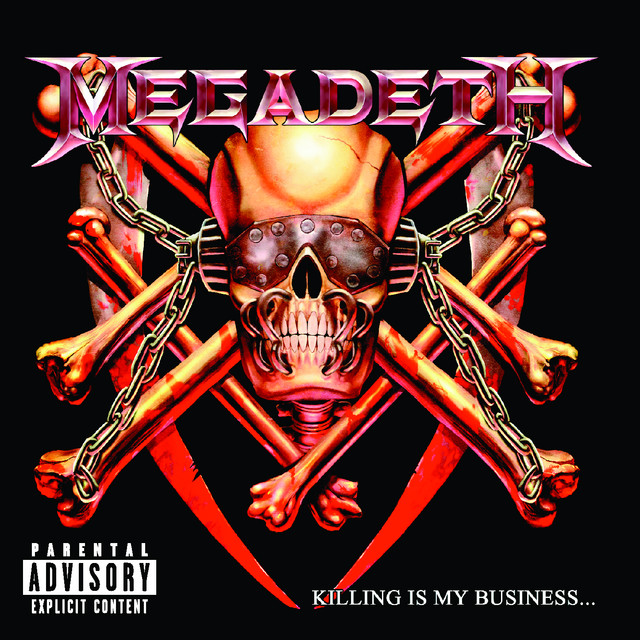
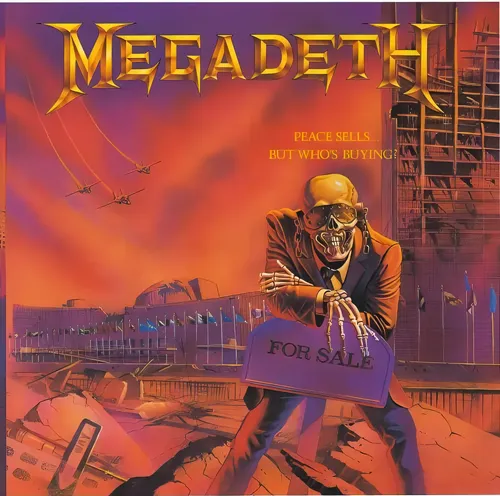
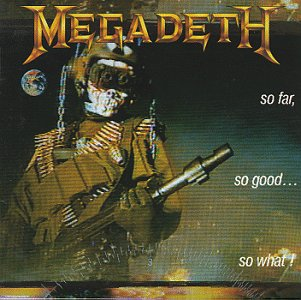
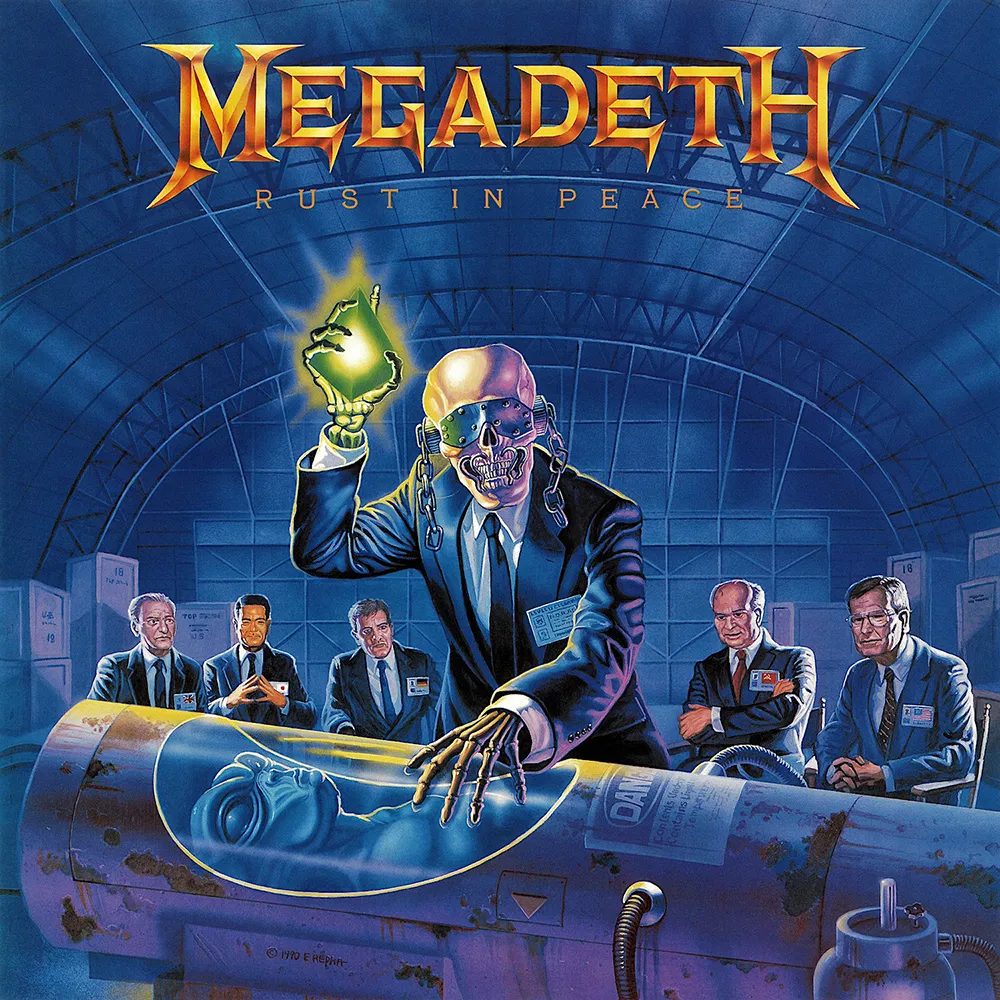
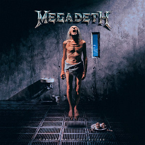
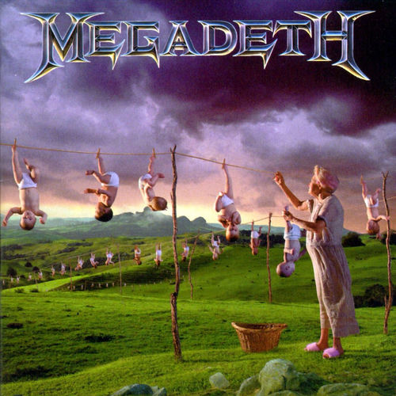

¡Bienvenidos a la discografía de MEGADETH!
Aquí encontrarás la historia musical completa de Megadeth ordenada cronológicamente, desde su nacimiento en 1985 hasta la actualidad.
En esta sección repasamos todos los álbumes de estudio de la banda, uno por uno, con:
- Fecha de lanzamiento
- Formacion de la banda en ese momento
- La historia detras de cada disco
- Tracklist completo

Killing is my business... And business is good!
Es el álbum debut de Megadeth, lanzado el 12 de junio de 1985 por el sello independiente Combat Records.
Dave Mustaine, recién expulsado de Metallica en 1983 por problemas de drogas, alcohol y conflictos personales, formó Megadeth junto a David Ellefson (bajo) con la clara intención de crear una banda más rápida, pesada y técnica que su ex-banda. “Quería sangre. La de ellos. Quería ser más rápido y más pesado que Metallica”, dijo Mustaine.
La formación clásica del disco incluyó a Chris Poland (guitarra) y Gar Samuelson (batería), quienes aportaron un toque jazzístico al thrash. Grabado entre diciembre de 1984 y enero de 1985 en estudios de Malibu y Hollywood, el álbum es puro thrash speed metal crudo, agresivo y veloz, con temas de muerte, violencia y ocultismo. Incluye la famosa versión acelerada de “Mechanix” (canción que Mustaine había escrito para Metallica y que ellos convirtieron en la más lenta “The Four Horsemen”).
A pesar de su producción rudimentaria, el disco ayudó a consolidar el thrash metal como subgénero y sentó las bases del sonido de Megadeth.
Curiosidades del album:
- Presupuesto caótico: Combat Records les dio $8.000 (luego sumaron $4.000 más). La banda gastó más de la mitad en drogas (cocaína y heroína), alcohol y comida. Terminaron despidiendo al productor original y produciendo ellos mismos con el ingeniero Karat Faye.
- La portada que conocemos (con la calavera de plástico y papel aluminio) no era la original. Mustaine había dibujado a Vic Rattlehead (el mascota de la banda) con los ojos, oídos y boca tapados (inspirado en los tres monos sabios). El sello perdió el arte y puso esa versión barata y amateur. La banda quedó horrorizada.
- Mustaine casi no canta en el disco: buscaron vocalista durante meses. Despidieron a uno porque se presentó con maquillaje y eyeliner (demasiado glam para Megadeth). Al final, Ellefson convenció a Dave de cantar él mismo, naciendo así su característico estilo vocal.
- Incluye una versión polémica y pervertida del clásico “These Boots Are Made for Walkin'” de Nancy Sinatra, que el compositor original (Lee Hazlewood) odió tanto que amenazó con demandarlos. La quitaron de reediciones posteriores.
- El título del álbum surgió mientras miraban artículos en una tienda de excedentes del ejército.

Peace sells... But who's buying?
Es el segundo álbum de estudio de Megadeth, lanzado el 19/25 de septiembre de 1986 por Capitol Records (después de que el sello comprara el contrato de la banda a Combat Records).
Grabado entre febrero y marzo de 1986 en Los Ángeles (principalmente en Music Grinder Studios), con un presupuesto de $25.000. Mustaine lo co-produjo con Randy Burns, pero Capitol contrató a Paul Lani para hacer un remix final que le diera más claridad y potencia al sonido.
Con la misma formación que el debut (Dave Mustaine en voz y guitarra, David Ellefson en bajo, Chris Poland en guitarra y Gar Samuelson en batería), el disco representa un gran salto en calidad: riffs más complejos, influencias de jazz/fusión (gracias a Poland y Samuelson), producción más profesional y letras cargadas de cinismo político, crítica social y rabia personal.
Fue el álbum de breakthrough de la banda: los consolidó como uno de los líderes del thrash metal, alcanzó el puesto #76 en Billboard y temas como “Peace Sells” (con su icónico intro de bajo) y “Wake Up Dead” se volvieron himnos.
Curiosidades del album:
- Condiciones extremas: Mustaine y Ellefson vivían prácticamente en la pobreza (casi sin hogar) y ensayaban en un local llamado “The Loft”. Mustaine escribió las letras de “Peace Sells” directamente en la pared del estudio porque no tenía papel.
- Portada legendaria: Creada por Ed Repka (quien luego haría más arte para Megadeth). Muestra a Vic Rattlehead como agente inmobiliario vendiendo las ruinas de la sede de la ONU destruida tras un holocausto nuclear. La idea surgió mientras Mustaine almorzaba frente al edificio real de la ONU. El título del álbum proviene de un artículo que Mustaine leyó: “Peace sells, but nobody's buying”.
- Éxito inesperado: El bajo intro de “Peace Sells” se usó durante años como tema de apertura de MTV News, aunque la banda nunca recibió regalías por eso.
- Es considerado por muchos fans como uno de los mejores álbumes de thrash de la historia, junto a Master of Puppets y Reign in Blood (ambos también de 1986).

So far, so good... So what!
Es el tercer álbum de estudio de Megadeth, lanzado el 19 de enero de 1988 por Capitol Records. Tras el éxito de Peace Sells, la banda sufrió una fuerte inestabilidad: Dave Mustaine despidió al guitarrista Chris Poland y al baterista Gar Samuelson por problemas graves de drogas y comportamiento disruptivo (incluyendo pignorar equipo de la banda para comprar heroína).
Se incorporaron rápidamente el guitarrista Jeff Young y el baterista Chuck Behler (ex técnico de batería de Samuelson). Este fue el único álbum grabado con esta formación.
Grabado en 1987 en Music Grinder Studios (Los Ángeles), el disco mantiene la velocidad y técnica del thrash, pero con un sonido más crudo y apresurado. Incluye temas potentes como “Set the World Afire” (una de las primeras canciones que escribió Mustaine tras ser echado de Metallica), “In My Darkest Hour” (escrita en homenaje a Cliff Burton tras su muerte), “502”, “Mary Jane” y una versión de “Anarchy in the U.K.” de los Sex Pistols.
A pesar de los problemas internos y la producción cuestionada, el álbum vendió bien (alcanzó el #28 en EE.UU. y #18 en UK) y ayudó a elevar el perfil de la banda.
Curiosidades del album:
- Caos total en la banda: Mustaine estaba muy metido en las drogas durante la grabación. La portada muestra a Vic Rattlehead con un uniforme militar, pero muchos fans la consideran una de las menos logradas de la discografía.
- “In My Darkest Hour”: Escrita por Mustaine poco después de la muerte de Cliff Burton (bajista de Metallica). Es una de las canciones más emotivas y queridas de la banda.
- “Liar”: Mustaine la escribió directamente contra Chris Poland, acusándolo de robar y vender guitarras de la banda para comprar drogas.
- Poco después de la gira del álbum, tanto Jeff Young como Chuck Behler fueron despedidos. Esto abrió la puerta a la llegada de Marty Friedman y Nick Menza, que llevarían a Megadeth a su era más exitosa con Rust in Peace.

Rust in peace
Es el cuarto álbum de estudio de Megadeth, lanzado el 24 de septiembre de 1990 por Capitol Records. Después del caos y la inestabilidad de So Far, So Good... So What!, Mustaine armó lo que muchos consideran la formación clásica de la banda: Dave Mustaine (voz y guitarra), David Ellefson (bajo), Marty Friedman (guitarra) y Nick Menza (batería). Este fue el primer disco con Friedman y Menza.
Grabado entre 1989 y 1990 en Rumbo Recorders (Canoga Park, California), con Mike Clink como productor (famoso por trabajar con Guns N' Roses). A diferencia de álbumes anteriores, la grabación fue más estable y profesional, sin tantos cambios de productor a mitad de camino.
El disco es una obra maestra del thrash metal técnico: riffs ultrarrápidos, cambios de tiempo complejos, solos brillantes de Friedman y una producción potente. Las letras abordan temas como guerras religiosas, conspiraciones extraterrestres, política nuclear y adicciones. Temas destacados: “Holy Wars... The Punishment Due”, “Hangar 18”, “Tornado of Souls”, “Rust in Peace... Polaris” y “Five Magics”.
Fue un éxito comercial (llegó al #23 en Billboard 200 y #8 en UK), recibió una nominación al Grammy y es considerado por muchos como uno de los mejores álbumes de thrash metal de todos los tiempos.
Curiosidades del album:
- Título inspirado en un bumper sticker: Mustaine vio en la carretera un adhesivo que decía “May all your nuclear weapons rust in peace” (Que todas tus armas nucleares se oxiden en paz). Le pareció una frase profunda y lo convirtió en el título del disco.
- Marty Friedman casi no entra: Mustaine recibió una cinta de Marty (del álbum Dragon's Kiss) y al ver la portada con pelo largo y estilo “posero” la tiró diciendo “What a clown”. Luego escuchó la música y quedó impresionado con su técnica.
- Portada icónica: Creada por Ed Repka. Muestra a Vic Rattlehead dentro del Hangar 18, sosteniendo un objeto brillante sobre un alienígena preservado, mientras líderes mundiales (Bush, Gorbachev, etc.) observan.
- Estabilidad relativa: Fue el primer álbum de Megadeth sin despidos masivos durante o inmediatamente después de la grabación. Esta formación duraría varios años y lanzaría los discos más exitosos de la banda.

Countdown to extinction
Es el quinto álbum de estudio de Megadeth, lanzado el 14 de julio de 1992 por Capitol Records.Con la misma formación clásica (Dave Mustaine, Marty Friedman, David Ellefson y Nick Menza), este disco representa el punto más comercial y exitoso de la banda hasta ese momento. Fue producido por Dave Mustaine junto a Max Norman (productor conocido por su trabajo con Ozzy Osbourne).
Grabado entre enero y abril de 1992 en The Enterprise Studios (Burbank, California), el álbum tiene un sonido más pulido, con estructuras de canciones más accesibles, pero sin perder la agresividad del thrash. Temas destacados incluyen “Symphony of Destruction” (uno de los mayores hits de la banda), “Sweating Bullets”, “Skin o' My Teeth”, “This Was My Life” y la canción titular.
Countdown to Extinction es el álbum más vendido de Megadeth (más de 2 millones de copias solo en EE.UU., doble platino). Debutó en el puesto #2 del Billboard 200 (solo detrás de Achy Breaky Heart de Billy Ray Cyrus) y recibió una nominación al Grammy como Best Metal Performance.
Curiosidades del album:
- Sobriedad total: Fue el primer álbum que Dave Mustaine grabó completamente “stone sober” (sin drogas ni alcohol), después de años de adicciones. Mustaine lo consideró un logro importante.
- Grabado durante los disturbios de Los Ángeles 1992: Las sesiones coincidieron con los famosos riots de LA tras el caso Rodney King. La banda grababa mientras la ciudad ardía.
- “Symphony of Destruction”: Inspirada en un documental de la Segunda Guerra Mundial, la película The Manchurian Candidate y un incidente en gira con Stone Temple Pilots.
- Título track: Habla sobre la extinción de especies y temas ambientales. Ganó el Genesis Award de la Humane Society (Megadeth es la única banda de metal que lo ha recibido).

Youthanasia
Es el sexto álbum de estudio de Megadeth, lanzado el 1 de noviembre de 1994 por Capitol Records.Con la misma formación clásica (Dave Mustaine, Marty Friedman, David Ellefson y Nick Menza), este disco continúa la tendencia más melódica y accesible iniciada en Countdown to Extinction. Fue producido nuevamente por Max Norman y grabado en Phoenix, Arizona (donde Mustaine se mudó con su familia para mantenerse sobrio).
El sonido es más pesado y mid-tempo, con menos velocidad thrash y mayor énfasis en riffs potentes, melodías vocales y armonías entre Mustaine y Friedman. Temas destacados: “Reckoning Day”, “Train of Consequences”, “À Tout le Monde” (uno de los mayores hits de la banda, con coro en francés), “Addicted to Chaos”, “Elysian Fields” y la canción titular.
El álbum debutó en el puesto #4 del Billboard 200, fue certificado platino en EE.UU. (más de 1 millón de copias) y consolidó el éxito comercial de Megadeth en los 90, aunque algunos fans old-school lo criticaron por sonar “demasiado pulido”.
Curiosidades del album:
- Título y concepto: “Youthanasia” es un juego de palabras entre “youth” (juventud) y “euthanasia” (eutanasia). Mustaine criticaba cómo la sociedad estaba “eutanasando” (matando lentamente) a su juventud a través de la violencia, las drogas y los medios.
- Portada impactante: Creada por Hugh Syme. Muestra a una anciana colgando bebés por los pies en una interminable cuerda de tender ropa. La imagen está inspirada directamente en una frase de la canción título: “We've been hung out to dry” (Nos han dejado colgando para secar).
- Estabilidad y terapia: Fue el tercer álbum consecutivo con la misma formación (la más larga y exitosa de la banda). Durante la composición, los miembros tuvieron tensiones, por lo que hicieron sesiones de terapia grupal para mantener la paz.
- Producción particular: Max Norman pidió que todas las canciones tuvieran un tempo similar para que el álbum fluyera mejor, lo que le da un feeling más uniforme (aunque algunos fans lo encuentran menos dinámico).